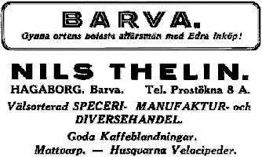

|
|
Välkommen till Barva! |
|


Om Hagaborgs handel:
 |
År 1929 kom det unga paret Valborg och Nils Thelin till Barva och övertog Hagaborgs Diverse-handel efter J A Lindgren. 1930 fick de sonen Tage och två år senare föddes dottern Inga. I affären såldes det specerier, korv, ost, sill, kläder, spik, hästskor, taggtråd, glasrutor och mycket mer. (Kunderna kunde beställa t.ex. en ruta som skulle vara 40 x 50 cm, glaset förvarades i garaget. Nils Thelin ansågs duktig på att skära glas). |
Några år senare öppnade Thelin också en bensinmack. Bensin, fotogen och olja såldes, liksom karbid, vilket är en sorts massa, som användes under andra världskriget till bränsle ibland annat lampor.
Manufaktur är en benämning på fabrikstillverkade textilier, samt vissa järn och metallvaror. Dessa varor inköptes i Arboga hos Åman & Melander, i Eskilstuna hos Eriksson & Co och vid Hakonbolaget, det hände också att det kom handelsresande till Hagaborg. På hyllorna till vänster i affären låg tygpackar, linnen och byxor. Damunderkläderna låg förpackade i små fina kartonger. Blå, vita och grå långkalsonger och undertröjor låg i travar på hyllorna. Mattvarp och sybehör var också artiklar som fanns i en manufakturaffär. Kängor och gummistövlar ingick också i sortimentet.
Färskvaror. En gång i veckan kom slaktaren Erik Rydell med kött och charkvaror, som sedan förvarades i ett isskåp i källaren. Falukorv såldes det mycket av. Ute i hagen fanns isstacken. En bonde levererade stora iskuber under vintern som sedan skull räcka fram till nästa vinter. Isen lades uppe på skåpet, när sedan isen smälte rann vattnet ner efter sidorna och kylde därmed luften i skåpet. Jästbolaget hade en egen chaufför som åkte runt till butikerna och levererade jäst i 1 kgs förpackningar. Jäst, liksom så mycket annat, såldes i lösvikt.
Smör Några bönder kom med nykärnat smör, som Valborg förpackade i smörpapper och Nils sålde på Smörtorget i Eskilstuna.
Kaffe maldes i en kaffekvarn, först en manuell kaffekvarn, så småningom köptes en elektrisk kvarn in. Karin, Tages dotter född 1956, har flera tidiga barndomsminnen från farfar och farmors affär. Ett är den goda doften av kaffe när kaffekvarnen sattes igång, ett annat hur otäckt, spännande det var att gå ner i källaren och titta på de stora runda ostarna och kanske få en skymt av källargubben som farfar talade om.
1932 annonserade Thelin om bland annat sina goda kaffeblandningar.
Specerier, socker, såväl bit som strösocker var en stor produkt, liksom mjöl, mannagryn och havregryn. Kakao, kryddor och salt var annat som kunde räknas till specerierna.
Rengöringsmedel och hygien, såpa, tvättmedlet Persil, tvålen Palmolive à 50 öre, rakvatten och Salubrin fanns på hyllorna i affären. Vademecum var något Thelin rekommenderade för många olika sorters åkommor.
Ost och sill förvarades i källaren. Inga fick ofta springa och hämta salt sill, som förpackades i tidningspapper.
Taxirörelsen. Det var ofta fråga om sjuktransporter in till Eskilstuna lasarett, men det kunde också var några bönder som varit på kalas och behövde skjuts hem fram på natten. Sven Svensson i Söderlida övertog taxirörelsen i mitten av 50-talet.
Samlingsplats. Post och tidningar lämnades ut vid Hagaborgs handel under 30 och 40-talet. Många var också de mer lokala nyheterna som förmedlades muntligt, när människor från bygden möttes, för att hämta tidningen eller köpa sitt snus. Det hände också att gubbarna köpte sig en pilsner, tände pipan och satte sig ner på en av stolarna i affären, för att riktigt få tid att prata.
Räkenskaperna. Kalle Johansson hjälpte Thelin med boksluten. Under andra världskriget tog ransoneringskort mycket tid att hantera. Erik Smith som var kantor och skollärare hade hand om utdelningen av korten en gång i månaden, då fick Barvaborna gå en trappa upp i logenlokalen för att få ut sina kött, smör, socker- och kaffekuponger.
Huset - fastigheten. 1898 bildades IOGT-logen 2526 Ärild i Barva socken. Nykterhetslogen hade som mest ett hundratal medlemmar, det var mestadels pigor (jungfrur) och drängar från gårdarna i södra Barva som gick med i logen, vilken blev en samlingspunkt för ungdomar. 1900 tillsattes en byggnadskommitté med söner, snickare, arrendatorer från gårdarna Bondäng, Ekelund, Kyng, Sofielund och Ärbäcken.
1901 bildades en byggnadsföreningen som fick ett amorteringslån à 1.000 kr och ett borgensån à 500 kr hos Barva kommunalkassa. Byggnaden uppfördes i två plan. Nedre våningen inreddes för att fungera som handelslokal och försågs också med två rum och kök. Det byggdes också ett uthus med plats för två packbodar, två stallplatser, två vedbodar, magasin och källare.
I december 1902 hyrdes nedervåningen ut till en handelsman för 300 kronor/år och övre våningen till logen Ärild för 50 kronor/ år. /Inga och Karin 2000 samt (Eskilstuna museers årsbok 1976)
|
I DAG FINNS BUTIKER ÖVERALLT som nästan alltid är öppna. Så har det inte alltid varit. Se här:
Vad kommer härnäst? Källa: Tidningen Land nr 17/2000 |